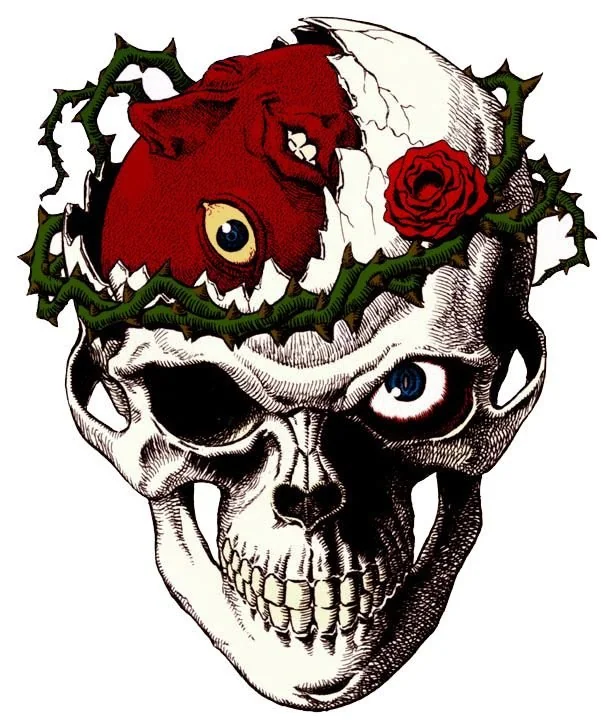

LAKEBAN
Social media platform with 330+ active users.

UNIT PROFILE // 001
I'm Offihito, a 16 y.o. web developer who mostly does experiments in my free time.
AUDIO LOG // NOW PLAYING
Midnight Dreams
0:00 / 0:00
Social media platform with 330+ active users.
Feature-rich browser with regional content access and ad blocking.
C decompiler: binary to debug symbols to original C code.
x86_64 operating system designed to run most Linux software.
Multi-protocol bootloader supporting Linux-boot, Multiboot2, Limine, and Krexo-protocol.